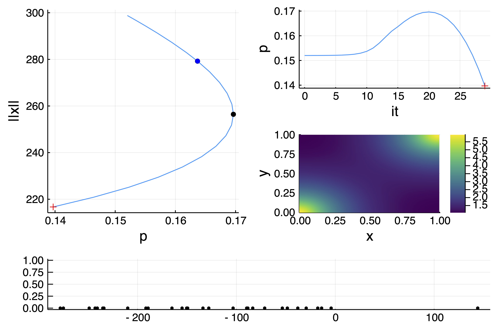
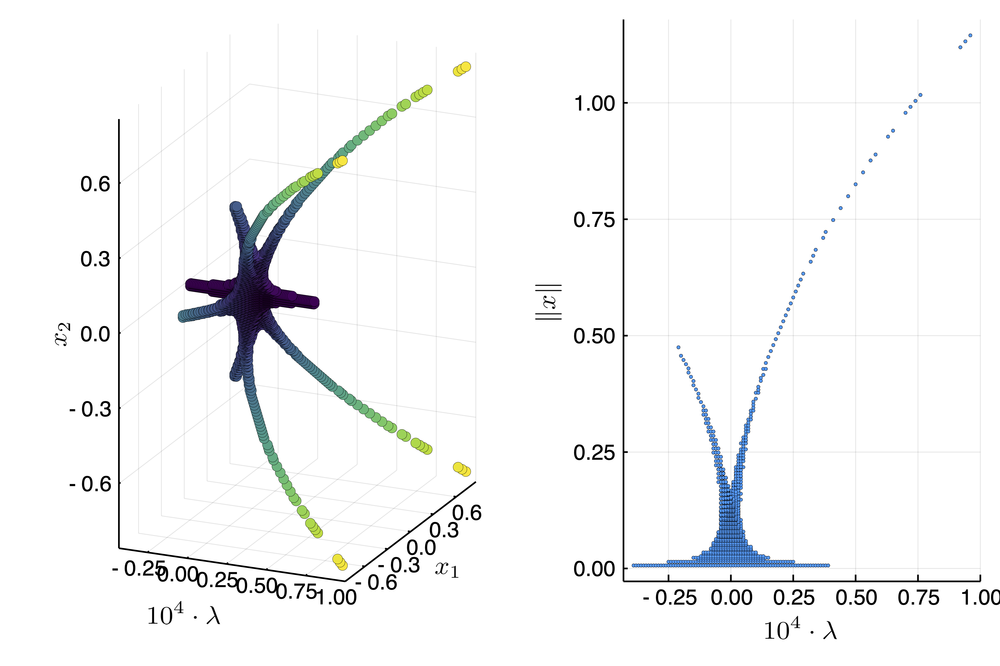

2d generalized Bratu–Gelfand problem
The following example is exposed in Farrell, Patrick E., Casper H. L. Beentjes, and Ásgeir Birkisson. The Computation of Disconnected Bifurcation Diagrams. ArXiv:1603.00809 [Math], March 2, 2016. It is also treated in Michiel Wouters. Automatic Exploration Techniques for the Numerical Continuation of Large–Scale Nonlinear Systems, 2019.
We consider the problem of Mittelmann:
\[\Delta u + NL(\lambda,u) = 0\]
with Neumann boundary condition on $\Omega = (0,1)^2$ and where $NL(\lambda,u)\equiv-10(u-\lambda e^u)$. This is a good example to show how automatic branch switching works and also nonlinear deflation.
We start with some imports:
using Revise
using DiffEqOperators, ForwardDiff
using BifurcationKit, LinearAlgebra, Plots, SparseArrays, Parameters, Setfield
const BK = BifurcationKit
# define the sup norm and a L2 norm
norminf(x) = norm(x, Inf)
normbratu(x) = norm(x .* w) / sqrt(length(x)) # the weight w is defined below
# some plotting functions to simplify our life
plotsol!(x, nx = Nx, ny = Ny; kwargs...) = heatmap!(reshape(x, nx, ny); color = :viridis, kwargs...)
plotsol(x, nx = Nx, ny = Ny; kwargs...) = (plot();plotsol!(x, nx, ny; kwargs...))and with the discretization of the problem
function Laplacian2D(Nx, Ny, lx, ly, bc = :Neumann)
hx = 2lx/Nx
hy = 2ly/Ny
D2x = CenteredDifference(2, 2, hx, Nx)
D2y = CenteredDifference(2, 2, hy, Ny)
Qx = Neumann0BC(hx)
Qy = Neumann0BC(hy)
D2xsp = sparse(D2x * Qx)[1]
D2ysp = sparse(D2y * Qy)[1]
A = kron(sparse(I, Ny, Ny), D2xsp) + kron(D2ysp, sparse(I, Nx, Nx))
return A
end
ϕ(u, λ) = -10(u-λ*exp(u))
dϕ(u, λ) = -10(1-λ*exp(u))
function NL!(dest, u, p)
@unpack λ = p
dest .= ϕ.(u, λ)
return dest
end
NL(u, p) = NL!(similar(u), u, p)
function Fmit!(f, u, p)
mul!(f, p.Δ, u)
f .= f .+ NL(u, p)
return f
end
Fmit(u, p) = Fmit!(similar(u), u, p)It will also prove useful to have the derivatives of our functional:
function JFmit(x,p)
J = p.Δ
dg = dϕ.(x, p.λ)
return J + spdiagm(0 => dg)
end
# compute 3-Jet
jet = BK.getJet(Fmit, JFmit)We need to define the parameters associated to this problem:
Nx = 30; Ny = 30
lx = 0.5; ly = 0.5
# weight for the weighted norm
const w = (lx .+ LinRange(-lx,lx,Nx)) * (LinRange(-ly,ly,Ny))' |> vec
Δ = Laplacian2D(Nx, Ny, lx, ly)
par_mit = (λ = .05, Δ = Δ)
# initial guess f for newton
sol0 = zeros(Nx, Ny) |> vecTo compute the eigenvalues, we opt for the shift-invert strategy with shift =0.5
# eigensolver
eigls = EigKrylovKit(dim = 70)
# options for Newton solver, we pass the eigensolverr
opt_newton = BK.NewtonPar(tol = 1e-8, verbose = true, eigsolver = eigls, maxIter = 20)
# options for continuation
opts_br = ContinuationPar(pMax = 3.5, pMin = 0.025,
# for a good looking curve
dsmin = 0.001, dsmax = 0.05, ds = 0.01,
# number of eigenvalues to compute
nev = 30,
plotEveryStep = 10, newtonOptions = (@set opt_newton.verbose = true),
maxSteps = 100, precisionStability = 1e-6,
# detect codim 1 bifurcations
detectBifurcation = 3,
# Optional: bisection options for locating bifurcations
nInversion = 4, dsminBisection = 1e-7, maxBisectionSteps = 25)Note that we put the option detectBifurcation = 3 to detect bifurcations precisely with a bisection method. Indeed, we need to locate these branch points precisely to be able to call automatic branch switching.
Branch of homogenous solutions
At this stage, we note that the problem has a curve of homogenous (constant in space) solutions $u_h$ solving $N(\lambda, u_h)=0$. We shall compute this branch now.
Given that we will use these arguments for continuation many times, it is wise to collect them:
# optional arguments for continuation
kwargsC = (verbosity = 3, plot = true,
recordFromSolution = (x, p) -> (x = normbratu(x), n2 = norm(x), n∞ = norminf(x)),
plotSolution = (x, p; k...) -> plotsol!(x ; k...),
normC = norminf
)We call continuation with the initial guess sol0 which is homogenous, thereby generating homogenous solutions:
br, = BK.continuation(Fmit, JFmit, sol0, par_mit, (@lens _.λ), opts_br; kwargsC...)You should see the following result:

Several branch point were detected as can be seen using the command
julia> br
Branch number of points: 84
Branch of Equilibrium
Parameters λ from 0.05 to 0.025
Bifurcation points:
(ind_ev = index of the bifurcating eigenvalue e.g. `br.eig[idx].eigenvals[ind_ev]`)
- # 1, bp at λ ≈ +0.36787944 ∈ (+0.36787944, +0.36787944), |δp|=2e-10, [converged], δ = ( 1, 0), step = 18, eigenelements in eig[ 19], ind_ev = 1
- # 2, nd at λ ≈ +0.27255474 ∈ (+0.27255474, +0.27255937), |δp|=5e-06, [converged], δ = ( 2, 0), step = 33, eigenelements in eig[ 34], ind_ev = 3
- # 3, bp at λ ≈ +0.15215124 ∈ (+0.15215124, +0.15215818), |δp|=7e-06, [converged], δ = ( 1, 0), step = 48, eigenelements in eig[ 49], ind_ev = 4
- # 4, nd at λ ≈ +0.03551852 ∈ (+0.03551852, +0.03554981), |δp|=3e-05, [converged], δ = ( 2, 0), step = 76, eigenelements in eig[ 77], ind_ev = 6We notice several simple bifurcation points for which the dimension of the kernel of the jacobian is one dimensional. In the above box, δ = ( 1, 0) gives the change in the stability. In this case, there is one vector in the kernel which is real. The bifurcation point 2 has a 2d kernel and is thus not amenable to automatic branch switching.
Automatic branch switching at simple branch points
We can compute the branch off the third bifurcation point:
br1, = continuation(jet..., br, 3,
setproperties(opts_br;ds = 0.001, maxSteps = 40); kwargsC...)and you should see:

You can also plot the two branches together plot(br,br1,plotfold=false) and get

We continue our journey and compute the branch bifurcating of the first bifurcation point from the last branch we computed:
br2, = continuation(jet..., br1, 1,
setproperties(opts_br;ds = 0.001, maxSteps = 40); kwargsC...)
Analysis at the 2d-branch points (manual)
The second bifurcation point on the branch br of homogenous solutions has a 2d kernel. we provide two methods to deal with such case
- automatic local bifurcation diagram (see below)
- branch switching with deflation (see next section)
We provide a generic way to study branch points of arbitrary dimensions by computing a reduced equation. The general method is based on a Lyapunov-Schmidt reduction. We can compute the information about the branch point using the generic function (valid for simple branch points, Hopf bifurcation points,...)
bp2d = computeNormalForm(jet..., br, 2; verbose=true, nev = 50)You can print the 2d reduced equation as follows. Note that this is a multivariate polynomials. For more information, see Non-simple branch point.
julia> bp2d
Non simple bifurcation point at p ≈ 0.27255473583423123.
Kernel dimension = 2
Normal form :
+ -73.8978 * x1 ⋅ p + 0.0071 ⋅ x1³ + 0.0231 ⋅ x1² ⋅ x2 + -0.0273 ⋅ x1 ⋅ x2² + -0.0076 ⋅ x2³
+ -73.8978 * x2 ⋅ p + 0.0079 ⋅ x1³ + -0.027 ⋅ x1² ⋅ x2 + -0.0231 ⋅ x1 ⋅ x2² + 0.0072 ⋅ x2³You can evaluate this polynomial as follows bp2d(Val(:reducedForm),[0.1,0.2], 0.01) which returns a 2d vector or bp2d([0.1,0.2], 0.01). This last expression actually returns a vector corresponding to the PDE problem.
You need to solve these equations to compute the bifurcation diagram in the neighborhood of the bifurcation point. In the present case, we do it using brute force. We suggest to use IntervalConstraintProgramming.jl for a more precise way.
using ProgressMeter
Nd = 200; L = 0.9
# sampling grid
X = LinRange(-L,L, Nd); Y = LinRange(-L,L, Nd); P = LinRange(-0.0001,0.0001, Nd+1)
# sample reduced equation on the grid for the first component
V1a = @showprogress [bp2d(Val(:reducedForm),[x1,y1], p1)[1] for p1 in P, x1 in X, y1 in Y]
Ind1 = findall( abs.(V1a) .<= 9e-4 * maximum(abs.(V1a)))
# intersect with second component
V2a = @showprogress [bp2d(Val(:reducedForm),[X[ii[2]],Y[ii[3]]], P[ii[1]])[2] for ii in Ind1]
Ind2 = findall( abs.(V2a) .<= 3e-3 * maximum(abs.(V2a)))
# get solutions
resp = Float64[]; resx = Vector{Float64}[]; resnrm = Float64[]
@showprogress for k in Ind2
ii = Ind1[k]
push!(resp, P[ii[1]])
push!(resnrm, sqrt(X[ii[2]]^2+Y[ii[3]]^2))
push!(resx, [X[ii[2]], Y[ii[3]]])
endWe can now plot the local bifurcation diagram as follows
using LaTeXStrings
plot(
scatter(1e4resp, map(x->x[1], resx), map(x->x[2], resx); label = "", markerstrokewidth=0, xlabel = L"10^4 \cdot \lambda", ylabel = L"x_1", zlabel = L"x_2", zcolor = resnrm, color = :viridis,colorbar=false),
scatter(1e4resp, resnrm; label = "", markersize =2, markerstrokewidth=0, xlabel = L"10^4 \cdot \lambda", ylabel = L"\|x\|"))
This looks like a Pitchfork bifurcation with D4 symmetry
We can see that there are two types of solutions. After the bifurcation point, the solutions are of the form $(x_1,x_2) = (\pm x,\pm x)$ for some real $x$. Before the bifurcation point, the solutions are of the form $(x_1,x_2) = (\pm x,0), (0, \pm x)$ for some real $x$. Here is an example plotsol(bp2d(resx[10], resp[10]))

We could use the solutions saved in resp, resx as initial guesses for a call to continuation but we turn to a different method.
The brute force method provided all solutions in a neighborhood of the bifurcation point.
Instead of using brute force and computing the vector field on a grid. One can rely on IntervalConstraintProgramming.jl to do better using bisection. See also this discourse post where the same example is treated by D. P. Sanders.
Branch switching with deflated newton (manual)
At this stage, we know what happens at the 2d bifurcation point of the curve of homogenous solutions. We chose another method based on Deflated problems. We want to find all nearby solutions of the problem close to this bifurcation point. This is readily done by trying several initial guesses in a brute force manner:
out = zeros(Nx*Ny)
# deflation operator to
deflationOp = DeflationOperator(2, 1.0, [zeros(Nx*Ny)])
# options for the newton solver
optdef = setproperties(opt_newton; tol = 1e-8, maxIter = 100)
# eigen-elements close to the second bifurcation point on the branch
# of homogenous solutions
vp, ve, _, _= eigls(JFmit(out, @set par_mit.λ = br.specialpoint[2].param), 5)
for ii=1:length(ve)
outdef1, _, flag, _ = @time newton(
Fmit, JFmit,
# initial guess for newton
br.specialpoint[2].x .+ 0.01 .* real.(ve[ii]) .* (1 .+ 0.01 .* rand(Nx*Ny)),
(@set par_mit.λ = br.specialpoint[2].param + 0.005),
optdef, deflationOp)
flag && push!(deflationOp, outdef1)
endThis provides length(deflationOp) = 5 solutions as there are some symmetries in the problem. For example plotsol(deflationOp[5]) gives

We can continue this solution as follows in one direction
brdef1, = continuation(
Fmit, JFmit,
deflationOp[3], (@set par_mit.λ = br.specialpoint[2].param + 0.005), (@lens _.λ),
setproperties(opts_br;ds = -0.001, detectBifurcation = 3, dsmax = 0.01, maxSteps = 500);
kwargsC...)If we repeat the above loop but before the branch point by using @set par_mit.λ = br.specialpoint[2].param + 0.005, we get 3 new solutions that we can continue
brdef2, = continuation(
Fmit, JFmit,
deflationOp[5], (@set par_mit.λ = br.specialpoint[2].param + 0.005), (@lens _.λ),
setproperties(opts_br;ds = 0.001, detectBifurcation = 3, dsmax = 0.01);
kwargsC...)thereby providing the following bifurcation diagram with plot(br,br1,br2,brdef1, brdef2,plotfold=false, putbifptlegend = false)

Automatic branch switching at the 2d-branch points
We now show how to perform automatic branch switching at the nonsimple branch points. However, we think it is important that the user is able to use the previous tools in case automatic branch switching fails.
The call for automatic branch switching is the same as in the case of simple branch points (see above) except that many branches are returned.
branches, = continuation(jet..., br, 2,
setproperties(opts_br; detectBifurcation = 3, ds = 0.001, pMin = 0.01, maxSteps = 32 ) ;
kwargsC...,
nev = 30, tangentAlgo = BorderedPred()
)You can plot the branches using plot(branches...). The branches are as follows
julia> branches
8-element Vector{Branch}:
Branch number of points: 33
Branch of Equilibrium from NonSimpleBranchPoint bifurcation point.
Parameters λ from 0.27255473583423384 to 0.0656104381834156
Bifurcation points:
(ind_ev = index of the bifurcating eigenvalue e.g. `br.eig[idx].eigenvals[ind_ev]`)
- # 1, bp at λ ≈ +0.27255723 ∈ (+0.27255723, +0.27255723), |δp|=7e-10, [converged], δ = (-1, 0), step = 1, eigenelements in eig[ 2], ind_ev = 3
- # 2, bp at λ ≈ +0.14414814 ∈ (+0.14414814, +0.14424073), |δp|=9e-05, [converged], δ = ( 1, 0), step = 24, eigenelements in eig[ 25], ind_ev = 3
Branch number of points: 33
Branch of Equilibrium from NonSimpleBranchPoint bifurcation point.
Parameters λ from 0.27255473583423384 to 0.06561043854512201
Bifurcation points:
(ind_ev = index of the bifurcating eigenvalue e.g. `br.eig[idx].eigenvals[ind_ev]`)
- # 1, bp at λ ≈ +0.27255723 ∈ (+0.27255723, +0.27255723), |δp|=7e-10, [converged], δ = (-1, 0), step = 1, eigenelements in eig[ 2], ind_ev = 3
- # 2, bp at λ ≈ +0.14414814 ∈ (+0.14414814, +0.14424073), |δp|=9e-05, [converged], δ = ( 1, 0), step = 24, eigenelements in eig[ 25], ind_ev = 3
Branch number of points: 33
Branch of Equilibrium from NonSimpleBranchPoint bifurcation point.
Parameters λ from 0.27255473583423384 to 0.06561044134787948
Bifurcation points:
(ind_ev = index of the bifurcating eigenvalue e.g. `br.eig[idx].eigenvals[ind_ev]`)
- # 1, bp at λ ≈ +0.27255723 ∈ (+0.27255723, +0.27255723), |δp|=7e-10, [converged], δ = (-1, 0), step = 1, eigenelements in eig[ 2], ind_ev = 3
- # 2, bp at λ ≈ +0.14414815 ∈ (+0.14414815, +0.14424074), |δp|=9e-05, [converged], δ = ( 1, 0), step = 24, eigenelements in eig[ 25], ind_ev = 3
Branch number of points: 33
Branch of Equilibrium from NonSimpleBranchPoint bifurcation point.
Parameters λ from 0.27255473583423384 to 0.06561043798345574
Bifurcation points:
(ind_ev = index of the bifurcating eigenvalue e.g. `br.eig[idx].eigenvals[ind_ev]`)
- # 1, bp at λ ≈ +0.27255723 ∈ (+0.27255723, +0.27255723), |δp|=7e-10, [converged], δ = (-1, 0), step = 1, eigenelements in eig[ 2], ind_ev = 3
- # 2, bp at λ ≈ +0.14414814 ∈ (+0.14414814, +0.14424073), |δp|=9e-05, [converged], δ = ( 1, 0), step = 24, eigenelements in eig[ 25], ind_ev = 3
Branch number of points: 33
Branch of Equilibrium from NonSimpleBranchPoint bifurcation point.
Parameters λ from 0.27255473583423384 to 0.09945404995078021
Bifurcation points:
(ind_ev = index of the bifurcating eigenvalue e.g. `br.eig[idx].eigenvals[ind_ev]`)
- # 1, bp at λ ≈ +0.27255724 ∈ (+0.27255724, +0.27255724), |δp|=9e-10, [converged], δ = (-1, 0), step = 1, eigenelements in eig[ 2], ind_ev = 3
- # 2, bp at λ ≈ +0.27868730 ∈ (+0.27868728, +0.27868730), |δp|=3e-08, [converged], δ = (-1, 0), step = 15, eigenelements in eig[ 16], ind_ev = 2
Branch number of points: 33
Branch of Equilibrium from NonSimpleBranchPoint bifurcation point.
Parameters λ from 0.27255473583423384 to 0.09945405127587528
Bifurcation points:
(ind_ev = index of the bifurcating eigenvalue e.g. `br.eig[idx].eigenvals[ind_ev]`)
- # 1, bp at λ ≈ +0.27255724 ∈ (+0.27255724, +0.27255724), |δp|=9e-10, [converged], δ = (-1, 0), step = 1, eigenelements in eig[ 2], ind_ev = 3
- # 2, bp at λ ≈ +0.27868730 ∈ (+0.27868728, +0.27868730), |δp|=3e-08, [converged], δ = (-1, 0), step = 15, eigenelements in eig[ 16], ind_ev = 2
Branch number of points: 33
Branch of Equilibrium from NonSimpleBranchPoint bifurcation point.
Parameters λ from 0.27255473583423384 to 0.09945404945914721
Bifurcation points:
(ind_ev = index of the bifurcating eigenvalue e.g. `br.eig[idx].eigenvals[ind_ev]`)
- # 1, bp at λ ≈ +0.27255724 ∈ (+0.27255724, +0.27255724), |δp|=9e-10, [converged], δ = (-1, 0), step = 1, eigenelements in eig[ 2], ind_ev = 3
- # 2, bp at λ ≈ +0.27868730 ∈ (+0.27868728, +0.27868730), |δp|=3e-08, [converged], δ = (-1, 0), step = 15, eigenelements in eig[ 16], ind_ev = 2
Branch number of points: 33
Branch of Equilibrium from NonSimpleBranchPoint bifurcation point.
Parameters λ from 0.27255473583423384 to 0.09945404935297063
Bifurcation points:
(ind_ev = index of the bifurcating eigenvalue e.g. `br.eig[idx].eigenvals[ind_ev]`)
- # 1, bp at λ ≈ +0.27255724 ∈ (+0.27255724, +0.27255724), |δp|=9e-10, [converged], δ = (-1, 0), step = 1, eigenelements in eig[ 2], ind_ev = 3
- # 2, bp at λ ≈ +0.27868730 ∈ (+0.27868728, +0.27868730), |δp|=3e-08, [converged], δ = (-1, 0), step = 15, eigenelements in eig[ 16], ind_ev = 2